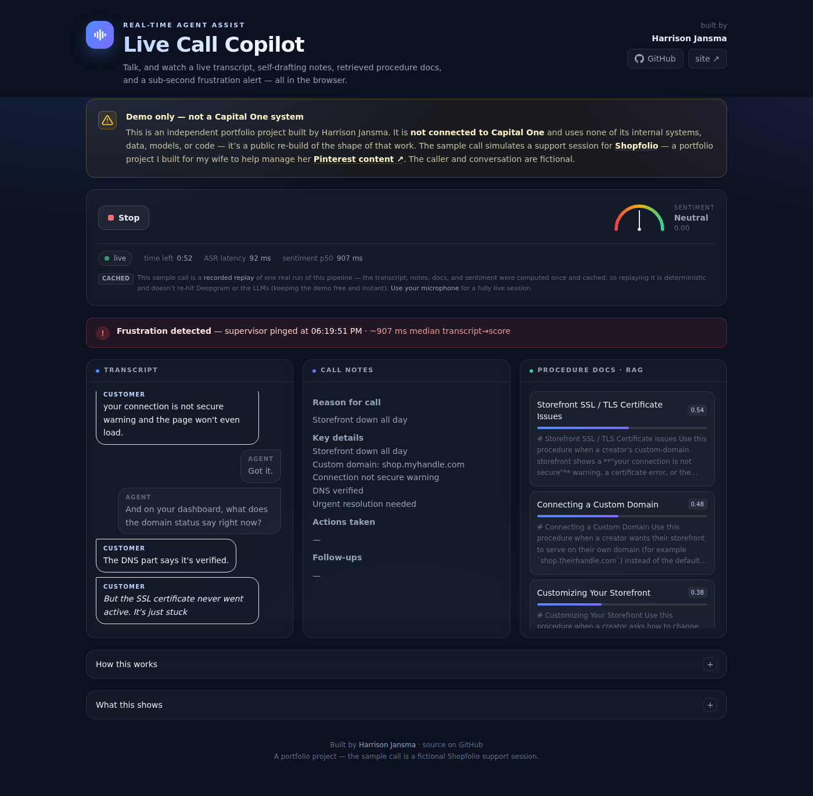

Live, LLM-powered systems augmenting thousands of contact-center agents at Capital One.
A public rebuild of the shape of the systems below, running live in your browser. Talk into your mic — or play a sample call — and watch a two-voice transcript, self-drafting notes, RAG-retrieved procedure docs, and a sub-second frustration alert. Deepgram + OpenAI composed into a real-time product; no proprietary anything.

An agentic GPT reasoning pipeline on Kafka that auto-drafts servicing-agent notes mid-call, with an LLM "agent-as-a-judge" review stage before anything reaches the agent.
A retrieval-augmented generation system that runs vector-embedding retrieval over live call transcripts to surface the right procedure and training documents to agents in real time.
An LLM system that detects and categorizes customer complaints on live transcripts and flags escalations — lifting complaint capture sharply over a legacy frustration-phrase flag, at high precision. Earned an internal excellence award; pilot planned for 2026.
Capital One's first real-time AI alert system — streaming DistilBERT and LLM sentiment over live calls at scale, alerting managers to de-escalate in real time.
Models that decision loans at large scale in auto lending.
Engineered and maintained the machine-learning suite behind Capital One's auto-loan underwriting, finding signal in credit characteristics tied to loan performance to decision loans at large scale.
Built a simulation engine that generates synthetic loan applications to power a reinforcement-learning task that optimizes credit policy — testing decisions before they ever touch a real applicant.
Where I sharpened the fundamentals — research, big data, and NLP.
Designed a novel model-training framework for anomaly detection on customer billing data, and built Hive and PySpark pipelines aggregating millions of records. The framework drove a 5x increase in the types of billing failure the system could detect — earning the only extension across an 80+ intern class.
Partnered with University of Pennsylvania sociologists on a long-term, population-level NLP study — building an emotion-classification model and designing Python scrapers over millions of public social-media profiles to measure population-wide shifts in emotional state following major political events.
Taught core data-science concepts on-site at Intuit through General Assembly — leading courses for software and data engineers during graduate study, translating dense statistical ideas into practical intuition they could apply on the job.
Taught myself the field in the open — unsupervised LDA topic modelling that isolated toxic Wikipedia comments into their own cluster, KMeans/agglomerative clustering on survey data, and widely-read data-science writing on freeCodeCamp and Towards Data Science.
Want the full detail, with dates and stack?
View my résumé